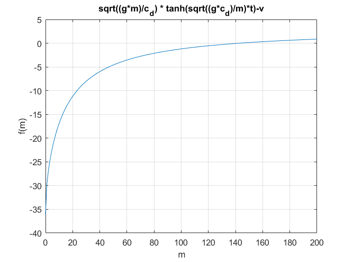

Contents
clear all;
close all;
Function Defination
syms m;
c_d = 0.25; v = 36; t = 4; g = 9.81;
f = @(m)sqrt((g*m)/c_d)*tanh(sqrt((g*c_d)/m)*t)-v;
fprime = eval(['@(m)' char(diff(f(m)))]);
Plotting Graph
M = 0:200;
f_M = 0:200;
n = 1;
for m = 0:200;
f_M(n) = f(m);
n = n+1;
end
plot(M, f_M); grid on;
xlabel("m"); ylabel("f(m)");
title("sqrt((g*m)/c_d) * tanh(sqrt((g*c_d)/m)*t)-v");

Stopping criterium
fprintf("(i) Taking the initial guess as x0 = 50 \n");
x0 = 50 ;
TOL = 10^(-5);
Nmax =100;
(i) Taking the initial guess as x0 = 50
Iteration Scheme
flag=0;
for i = 1 : Nmax
fold=f(x0);
fprimeold=fprime(x0);
dx = fold / fprimeold;
x0 = x0 - dx;
fprintf ( '\t\t %3d \t %.10f \n', i, x0 );
if ( abs(dx) < TOL )
flag=1;
break
end
end
1 88.3992785546
2 124.0896500820
3 140.5416962708
4 142.7071837659
5 142.7376272539
6 142.7376331084
if flag == 0
disp('Maximum number of iterations exceeded.')
end
fprintf('\n The approximate solution is %f \n', x0)
The approximate solution is 142.737633